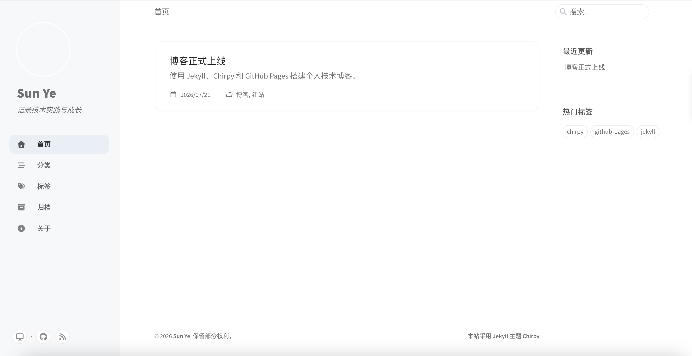

GitHub Pages、Jekyll、Chirpy 与 GitHub Actions 可以组成一套轻量的静态博客方案：Markdown 负责内容，Jekyll 生成页面，Chirpy 提供主题，GitHub Pages 与 Actions 完成托管和自动部署。
初始化完成后，文章发布流程可以简化为：
编写 Markdown → 本地验证 → git push → 自动部署本文基于 Apple Silicon Mac 和 macOS 14 的实际搭建过程，重点说明系统 Ruby 替换、Ruby 安装源异常、Gemfile 定位、Bundler 镜像、文章日期和 Git 传输协议等问题。
项目建议使用官方 chirpy-starter 模板，不直接维护完整主题源码。
Starter 已包含 Gemfile、_config.yml、_posts/ 和 GitHub Actions 工作流，并通过 RubyGem 引用 Chirpy，可以降低主题源码与站点内容之间的耦合。
GitHub 用户主页仓库采用以下命名格式：
your_git_name.github.io从模板创建仓库后执行：
git clone https://github.com/your_git_name/your_git_name.github.io.git
cd your_git_name.github.io首先检查环境：
uname -m
ruby --version
which ruby实操环境的初始结果为：
arm64
ruby 2.6.10
/usr/bin/rubymacOS 自带 Ruby，但版本较旧，/usr/bin 也属于系统管理范围。直接使用系统 Ruby 安装 Jekyll，容易引入权限和依赖冲突。
因此，不建议使用 sudo gem install 向系统目录写入依赖，而应安装独立 Ruby，并确保新路径优先于 /usr/bin/ruby。
同时确认 Command Line Tools、Git 和 Homebrew 可用：
xcode-select -p
git --version
brew --version最初采用 chruby + ruby-install：
brew install chruby ruby-install
ruby-install ruby 3.4.10安装在版本清单更新阶段失败：
Failed to download
https://raw.githubusercontent.com/postmodern/ruby-versions/master/ruby/checksums.md5测试结果显示，github.com 可以访问，而 raw.githubusercontent.com 持续超时。此时尚未进入 Ruby 编译阶段，因此问题与编译器或 Apple Silicon 兼容性无关，失败点是版本清单的网络访问。
如果本机已运行代理软件，可以将 HTTP 或 Mixed Port 传递给终端。若无需管理多个 Ruby 版本，也可以直接使用 Homebrew 的预编译 Ruby：
brew install ruby@3.4Apple Silicon Mac 将 Ruby 和 Gem 可执行文件目录加入 ~/.zshrc：
echo 'export PATH="/opt/homebrew/opt/ruby@3.4/bin:/opt/homebrew/lib/ruby/gems/3.4.0/bin:$PATH"' >> ~/.zshrc
source ~/.zshrc
hash -r随后验证并安装 Bundler：
which ruby
ruby --version
gem install bundler
bundle --version当 which ruby 不再返回 /usr/bin/ruby，即可继续配置项目。本次实操最终使用 Ruby 3.4.10。
执行 bundle install 时可能出现：
Could not locate Gemfile该错误通常不是 Bundler 损坏，而是当前目录不包含 Gemfile。建议依次检查：
pwd
ls Gemfile
find .. -name Gemfile找到项目后进入对应目录：
cd your_git_name.github.io确认 Gemfile 存在，再继续安装依赖。对于“找不到文件”类错误，优先检查路径比重新安装工具更有效。
国内网络访问 rubygems.org 可能超时，可以为当前项目配置 Bundler 镜像：
bundle config set --local mirror.https://rubygems.org https://mirrors.tuna.tsinghua.edu.cn/rubygems
bundle install
bundle check--local 只影响当前项目，不会修改其他 Ruby 项目的全局配置。
如果镜像暂未同步所需版本，可以取消镜像后重新安装：
bundle config unset --local mirror.https://rubygems.org
bundle installBundler 停留在 Resolving dependencies... 时不应立即中断。Chirpy 依赖较多，网络较慢时解析可能持续数分钟。
建议在 Starter 原有 _config.yml 上修改站点信息，不要用几行旧配置覆盖完整文件。
lang: zh-CN
timezone: Asia/Shanghai
title: Your Name
tagline: 记录技术实践与成长
url: "https://your_git_name.github.io"
baseurl: ""
github:
username: your_git_name
social:
name: Your Name
links:
- https://github.com/your_git_nameStarter 还包含分页、归档、文章默认值、页面集合和 PWA 等设置。过度精简 _config.yml 可能导致主题功能失效。
没有实际账号的社交平台配置应直接移除。例如，空的 Twitter 用户名可能生成无效的 twitter:site="@" 元数据。
Chirpy 文章存放在 _posts/，文件名格式为：
YYYY-MM-DD-slug.mdFront Matter 中需要明确文章日期和时区：
---
title: "博客正式上线"
date: 2026-07-21 09:00:00 +0800
categories: [博客, 建站]
tags: [jekyll, chirpy, github-pages]
---实操中，文章时间设置为 10:00，而构建时间是 09:54，Jekyll 因此输出：
Skipping: the post has a future date文章没有出现在首页，并不是主题或分页异常，而是被视为未来文章。
将文章时间调整到当前时间之前，并确认 _config.yml 使用 Asia/Shanghai，即可正常生成文章。
启动本地预览：
bundle exec jekyll serve --livereload浏览器访问 http://127.0.0.1:4000。确认首页、文章页和 About 页面后，执行生产构建与链接检查：
JEKYLL_ENV=production bundle exec jekyll build
bundle exec htmlproofer _site --disable-external本次实操生成 12 个 HTML 文件，检查 21 个内部链接和 2 个页面锚点，均通过验证。
随后提交代码：
git add .
git commit -m "feat: launch Chirpy blog"
git push origin main推送过程中，HTTPS Git 持续出现：
Failed to connect to github.com port 443此时 GitHub API可以访问，但 HTTPS Git 通道仍然超时。检查 SSH：
ssh -T git@github.com确认认证成功后，将远端切换为 SSH：
git remote set-url origin git@github.com:your_git_name/your_git_name.github.io.git
git push origin main切换后代码成功推送。GitHub API、HTTPS Git 与 SSH Git 是不同通道，一个通道可用不代表其他通道一定可用。
最后进入仓库设置：
Settings → Pages → Build and deployment → Source → GitHub ActionsStarter 工作流会自动安装依赖、构建网站、检查页面并部署到 GitHub Pages。本次 build 与 deploy 两个 Job 均返回 success。
which ruby 是否仍指向 /usr/bin/ruby；Gemfile；_config.yml 是否保留 Starter 完整结构；macOS 上搭建 Jekyll + Chirpy 的主要难点不在主题本身，而在 Ruby 环境、网络访问、项目路径和 Git 传输协议。
排错时应先定位故障层级：Ruby 安装失败时检查下载地址，Bundler 找不到 Gemfile 时检查当前目录，文章未生成时检查日期和时区，Git 推送超时时区分 HTTPS 与 SSH。
完成初始化后，技术博客不需要服务器运维和数据库。后续只需持续执行 Markdown 写作、本地验证和代码推送，即可形成稳定的内容发布流程。

https://sunye423.github.io